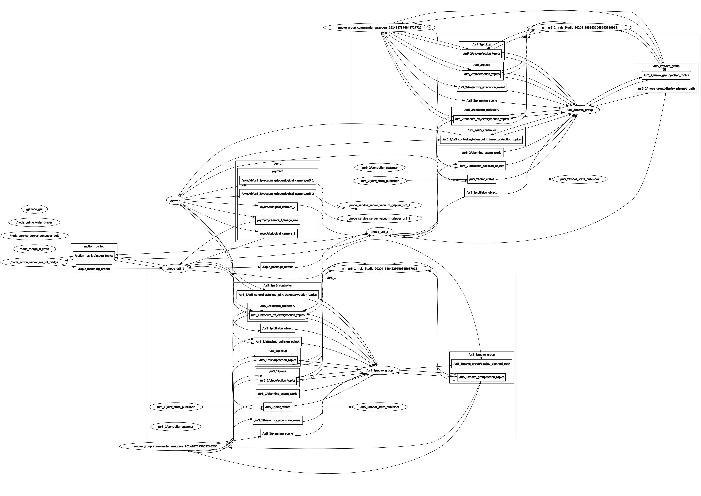

Introduction
Industry 4.0 is the current trend of automation and data exchange in manufacturing technologies. It aims at automation in loading and unloading, pick, place and stock management. It includes cyber-physical systems, the Internet of things and cloud computing.
The current warehouse management system is inefficient in eliminating certain issues. It requires time and effort to make physical checks of various products and their deliveries manually. This often leads to delays and mis-packs. The duplication of information and data entry is also a tedious task taking up long hours. This system requires a lot of manual labour which also shoots up the labour costs.
With the help of technologies like IOT, intelligent sensors, cloud computing we are able to achieve automation and develop smart ways in handling the data. This project ‘Vargibot’ is centered around the idea to develop an automated warehouse management system. The project uses Gazebo as a 3D simulation platform to simulate robots in complex environments.
The virtual environment consists of various colour-coded boxes to be delivered to different parts of the city. The order of delivery is subjected to a predefined priority order. The red coloured packages have the highest priority symbolizing medicines, the yellow coloured packages have medium priority symbolizing food and green coloured packages have the lowest priority symbolizing clothes. Two industrial robotic arms are placed at the ends of the conveyor belt.The first arm picks up the packages depending upon the priority of the orders received and places them on the conveyor belt. The second arm will collect the packages, sort them based on their colours and place them into their respective bins .The users will be notified regarding the status of their delivery once the order is placed and shipped.
Video of implementation
Implementation
- The 2D camera faces the packages on the shelf. The camera uses colour detection techniques or QR decoding techniques for classifying the packages on the shelf according to their colours.
- Inventory Management Spreadsheet of the warehouse is updated using the ROS-IOT bridge.It contains details of all the packages present on the shelf like their cost, quantity, priority etc.
- MQTT is the messaging protocol used to establish two way communication. It consists of publishers, topics, brokers and subscribers.Action client collects the orders and publishes them on MQTT. The orders will be published on MQTT topics and are received using ROS_IOT bridge.Simultaneously the incoming orders sheet is updated.
- The UR5 #1 Arm starts picking up the packages from the shelf and places it on the conveyor belt one-by-one. If there are multiple orders, the arm picks the orders based on their priorities. Once the package is placed on the conveyor belt, the orders dispatched sheet will be updated in the IMS. An email notification will be sent to the client using Google app scripts. The UR5#1 publishes a message to UR5#2 after the order is placed on the conveyor belt.
- UR5#2 sorts the package based on its colour, verifies it with the message published by UR5#1 and place them in their respective priority bins.
- The orders shipped sheet and the dashboard sheet of the warehouse inventory mastersheet will be updated. It contains details of the geolocation showing information about Inventory order, place and status of delivery and the time taken.
- An email notification will be sent to the customer after U5#2 picks up the packages from the conveyor belt and places them into colour corresponding bins.
API Documentation
RQT Graph
This is the rqt graph.